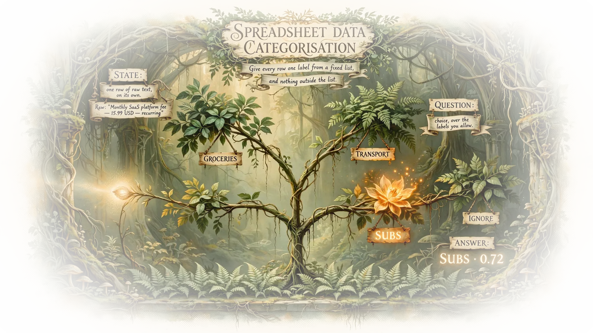

Case 01easy
Spreadsheet Data Categorisation
Give every row one label from a fixed list, and nothing outside the list.
- state
- one row of raw text, on its own
- question
- choice, over the labels you allow
- answer
- one label plus its probability
A sheet script posts each row to Jev together with the allowed categories, and writes the winning label into the target column. Because the categories are declared in the request, a label outside them cannot come back, which is what keeps a hand-checked column from growing invented values. Rows under your confidence threshold are left blank for a human.
one row in, one label out
pythonimport json, urllib.request
CATS = {"groceries": "Food and groceries",
"transport": "Travel and transport",
"subs": "Subscriptions",
"ignore": "Not a real expense"}
def label(row):
body = {"model": "jev-latest", "state": row, "questions": {
"category": {"type": "choice",
"instructions": "Which budget category does this bank line belong to?",
"criteria": CATS}}}
req = urllib.request.Request(
"https://api.venice.ai/api/v1/decisions",
data=json.dumps(body).encode(),
headers={"Authorization": "Bearer " + KEY,
"Content-Type": "application/json"})
ans = json.load(urllib.request.urlopen(req))["answers"]["category"]
return ans["choice"] if ans["confidence"] > 0.6 else NoneExample prompts
Prompt 1 of 2
state + questionstate: CARD PAYMENT 04/10 SQ *BLUE BOTTLE 4.80 question: category=choice:Which budget category does this bank line belong to?|groceries:Food and groceries,transport:Travel and transport,subs:Subscriptions,ignore:Not a real expense
Prompt 2 of 2
state + questionstate: DIRECT DEBIT NORTHWIND POWER 61.20 OCT question: category=choice:Which budget category?|utilities:Power, water, internet,rent:Housing,subs:Subscriptions,ignore:Not a real expense

In plain words
No jargon. Four things, in order: what comes in, what you hand it, what it does, and what you get back.Green is what you supply. Orange is what the model decides and returns.
-
01
What comes in
One row from a bank export, exactly as it appears.
-
02
What you hand it
The list of categories you allow, written out in advance.
-
03
What it does
Label every row the same way, so ten thousand rows read like one.
-
04
What you get back
One category per row, plus how sure it is from 0 to 1.
The Jev step: the choice comes from a fixed set of answers you wrote down, not from a model writing prose.